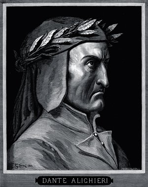

Сановитый, жирный Бык Маллиган возник из лестничного проема, неся в руках чашку с пеной, на которой накрест лежали зеркальце и бритва. Желтый халат его, враспояску, слегка вздымался за ним на мягком утреннем ветерке.
Он поднял чашку перед собою и возгласил:
– Introibo ad altare Dei.Остановясь,
он вгляделся вниз, в сумрак винтовой лестницы, и грубо крикнул:
– Выходи, Клинк! Выходи, иезуит несчастный!
Торжественно он проследовал вперед и взошел на круглую орудийную площадку[5]. Обернувшись по сторонам, он с важностью троекратно благословил башню, окрестный берег и пробуждающиеся горы. Потом, увидев Стивена Дедала, наклонился к нему и начал быстро крестить воздух, булькая горлом и подергивая головой. Стивен Дедал, недовольный и заспанный, облокотясь на последнюю ступеньку, холодно смотрел на дергающееся булькающее лицо, что благословляло его, длинное как у лошади, и на бестонзурную шевелюру, белесую, словно окрашенную под светлый дуб.
Бык Маллиган заглянул под зеркальце и тут же опять прикрыл чашку.
– По казармам! – скомандовал он сурово.
И пастырским голосом продолжал:
Ибо сие, о возлюбленные мои, есть истинная Христина, тело и кровь, печенки и селезенки. Музыку медленней, пожалуйста. Господа, закройте глаза. Минуту. Маленькая заминка, знаете, с белыми шариками. Всем помолчать.
Он устремил взгляд искоса вверх, издал долгий, протяжный призывный свист и замер, напряженно прислушиваясь. Белые ровные зубы кой-где поблескивали золотыми крупинками. Златоуст. Резкий ответный свист дважды прозвучал в тишине.
Он устремил взгляд искоса вверх, издал долгий, протяжный призывный свист и замер, напряженно прислушиваясь. Белые ровные зубы кой-где поблескивали золотыми крупинками. Златоуст. Резкий ответный свист дважды прозвучал в тишине.
– Спасибо, старина, – живо откликнулся он. – Так будет чудненько. Можешь выключать ток!
Божественная комедия. Данте Алигьери
Перевод М. Лозинского
Содержание
Песнь первая
Лес — Холм спасения — Три зверя — Вергилий
Земную жизнь пройдя до половины,
Я очутился в сумрачном лесу,
Утратив правый путь во тьме долины.
Каков он был, о, как произнесу,
Тот дикий лес, дремучий и грозящий,
Чей давний ужас в памяти несу!
7 Так горек он, что смерть едва ль не слаще.
Но, благо в нем обретши навсегда,
Скажу про все, что видел в этой чаще.
10 Не помню сам, как я вошел туда,
Настолько сон меня опутал ложью,
Когда я сбился с верного следа.
Песнь первая
Земную жизнь пройдя до половины,
Я очутился в сумрачном лесу,
Утратив правый путь во тьме долины.
Каков он был, о, как произнесу,
Тот дикий лес, дремучий и грозящий,
Чей давний ужас в памяти несу!
7 Так горек он, что смерть едва ль не слаще.
Но, благо в нем обретши навсегда,
Скажу про все, что видел в этой чаще.
10 Не помню сам, как я вошел туда,
Настолько сон меня опутал ложью,
Когда я сбился с верного следа.